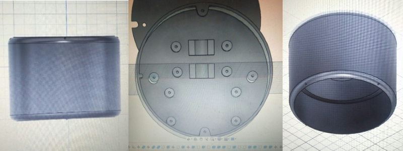
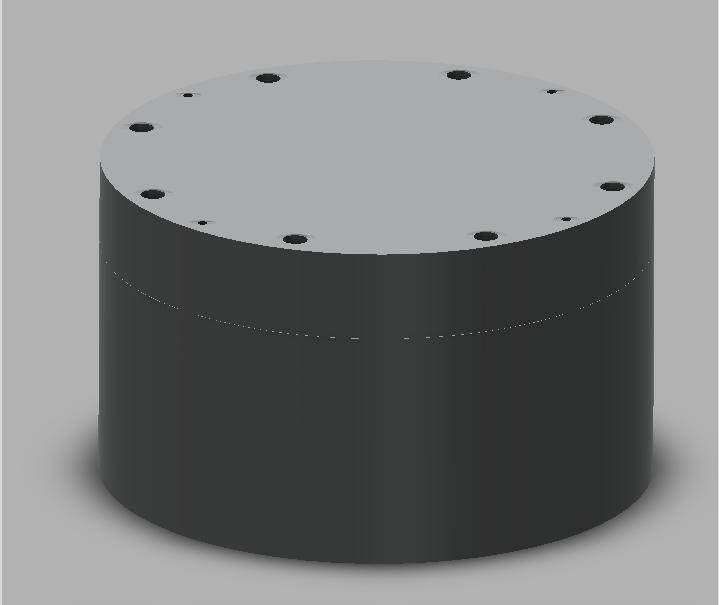

WEEK 2
April 17 2021
The initial interface we created in Blynk App. But sir told us to create one in MIT APP INVENTOR , So the first task of the week was to develop the application. MIT APP INVENTOR is very useful to create basic applications . I designed a simple interface with a button to on/off the device. Later, we will be adding more features to the app.

At the same time, our team members designed a case for our product using AutoCad. After working with 2-3 designs, we finalized the design model given below because it is very aesthetic, ergonomic, and easy to handle. The safety features were also in consideration while designing. To view the final design Click here.
Initial Design
Final Design
